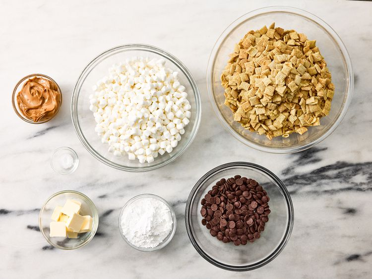
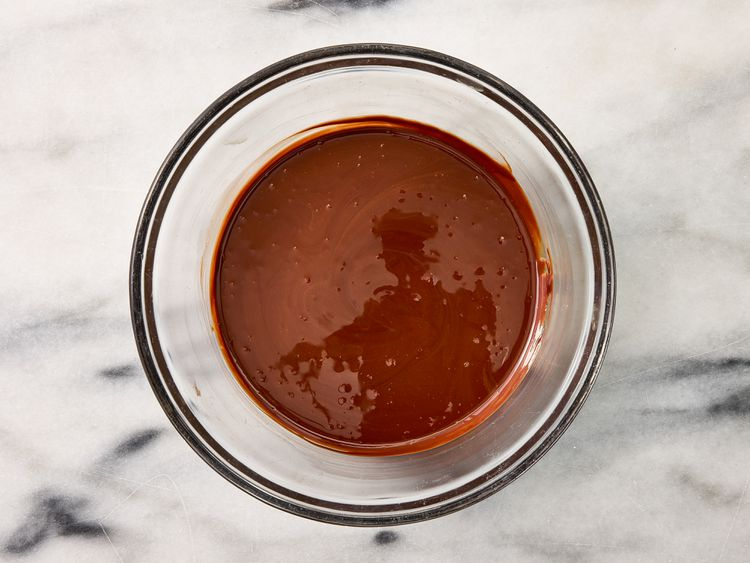
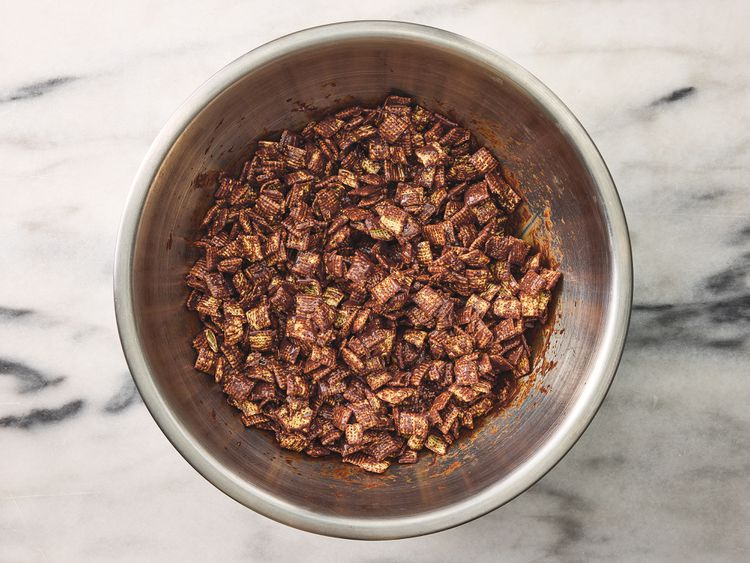
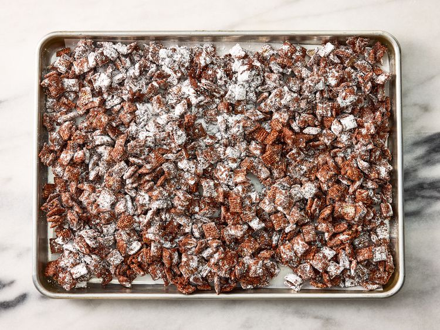
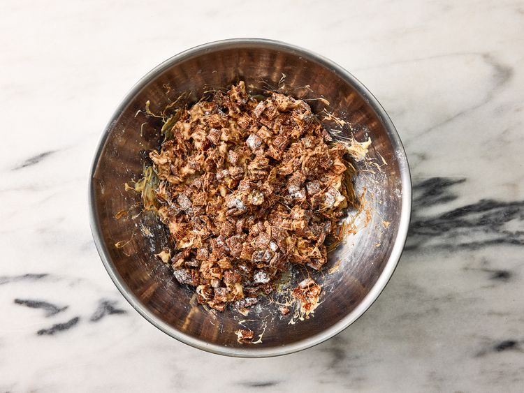
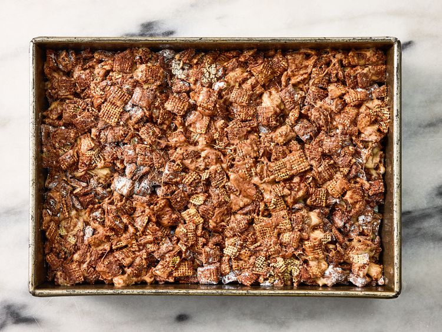
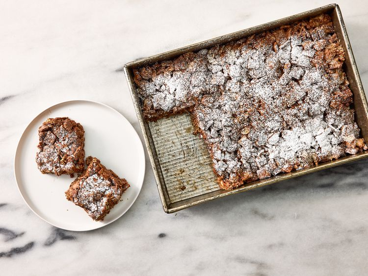

This recipe combines peanut butter and chocolate muddy buddies with the marshmallow gooeyness of a rice crispy treat for a bar that's good enough to bring to a party but easy enough to make for an any day snack. After seeing them go viral on social media, we had to try them ourselves—and now you can too.
Gather all ingredients.

Place chocolate chips, 3/4 cup peanut butter, and 4 tablespoons butter in a large microwave-safe heatproof bowl. Microwave on high until melted and smooth, stirring every 30 seconds, 1 ½ to 2 minutes; stir in salt.

Place cereal into a very large bowl. Pour melted chocolate mixture over cereal; fold until cereal is evenly coated. Let rest for 15 minutes. Rinse and dry bowl used to melt chocolate mixture and set aside.

Add 1 cup powdered sugar to cereal mixture; fold until evenly coated (it’s ok if some powdered sugar dissolves). Spread into an even layer on a large-rimmed, parchment-lined baking sheet and set aside. Rinse and dry bowl used to coat cereal mixture and set aside.

Place remaining 4 tablespoons butter and marshmallows in reserved large bowl. Microwave on high until marshmallows have puffed and start turning into one mass, about 45 seconds. Stir well and add 2 tablespoons peanut butter. Microwave for 30 more seconds, and stir again until smooth. Place cereal mixture back into reserved very large bowl and pour marshmallow mixture over cereal. Quickly fold and stir until evenly coated.

Spray a 13-x 9-inch baking pan with cooking spray. Spread cereal mixture into pan, lightly pressing into an even layer; let sit at room temperature until set, about 1 hour.

Sift remaining 1 tablespoon powdered sugar over cereal mixture, cut into 12 (3-x-3.25- inch) pieces and serve.
